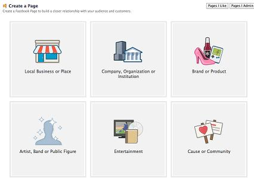
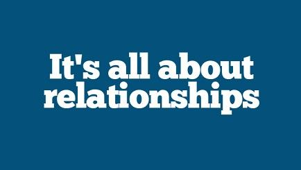

All the experts in the field recommend that you should start to market your e-book even before you even start writing it. You probably heard this advice before, but you’re not sure how to apply it. Don’t worry though we got you covered, we’ll describe the exact steps you need to take in detail below.
‘That’s awesome… but I already wrote my e-book! So, now what?’ Don’t worry! You can follow the same steps, the difference is that it might take a little more time before you start selling your copies. 😉
So you have a great idea for a new e-book? Awesome! Here is how to get started:
Define your audience
Find out who would want to read your e-book. Learn everything you can about them: their passions, their aspirations, their habits: online and offline, age, environment, problems and so on. What social networks they use? What subjects would capture their interest?
You need to know every aspect about these people’s lives, because you want to inspire them with your stories. Find them in their own habitat and engage them. Don’t be shy, start conversations, ask questions. This may be the most important step in marketing your e-book!
Take your time and do your research and create a pseudo-profile about your reader. This will help you, marketing wise, in every step of the way from this point on and it’s something you really need to do if you’re planning to market your e-book.
Come up with a killer title for your e-book
Yes, I know it’s very difficult to find a perfect title for your e-book and overwhelming at the same time, but the title is the first impression people get when they see it (that’s the overwhelming part). Your audience will read your title and decide whether to buy it or not. Don’t despair though! With a little preparation and brainstorming on your part, you can find the perfect title for your e-book!
Here are some tips to help you while researching a great title:
- See other titles in your genre. Search Amazon for the bestsellers in your genre and see what do the top 10 or 20 titles have in common? Write down anything that you notice and think how you can use it in your case.
- Think about the content of your e-book: is there anything in there that stands out? A line or a memorable phrase?
- Find strong and unique words in old books, songs or poems for inspiration.
- Go on Goodreads and analyze the title of user’s favorite books in your genre.
- Ask friends and family for help! Sometimes a new perspective is just what you need.
- When you think you have the title, don’t forget to search for it (on Google, Amazon, Goodreads) to see if it doesn’t already exists or have other meanings that you want to avoid.
Don’t worry if it takes some time and if you change your mind several times while brainstorming, you want your title to be perfect!
Create a great cover for your e-book
According to researches, 74% of a reader’s buying decision is based on the book’s cover alone. So you might want to get this one right. But don’t worry too much, at this point you want a cover for your social profiles, you can change it later when you finish the e-book. This way you can actually test some versions of your cover to see which one works best with your readers.
For Social Media Marketing purposes you can hire someone to do a clever cover for you (you can use services like Fiverr where you can find someone to design you a great cover for at little as $5!).
Here is a list of things to have in mind when you decide on your e-book’s cover:
- you should try to avoid putting your picture on the cover (unless you already are a big celebrity , in which case this strategy might help you)
- the colors, styles and images must resonate with your target audience (remember when I told you to learn everything about your audience?)
- build a simple website for your e-book, where you can publish and A/B test your cover. See which graphics and colors are compatible with your audience. This way, by the time you finish the e-book, you will have the perfect cover!
Build a simple website for your e-book
This can help you in many ways, but first of all it will be your gateway to your readers. You can showcase your e-book, add descriptions and intriguing stories about your e-book, your characters and about yourself. You can add a simple form where your readers can subscribe to your emailing list. This is quite important as you can notify them all when you actually launch the e-book.
You can create urgency and desire with clever messages, discounts and count-downs.
You can use the created website to A/B test your cover and title ideas.
And these are just a few of the benefits of having a website for your e-book before you actually write it! Plus you’ll have an easier time if you’re planning to market your e-book on social media.
Here are a few of the most important elements that your website should include:
- A detailed description of your e-book that will entice the readers to want more.
- A brief description about yourself, a photo, who you are and why you wrote the e-book.
- The cover.
- Testimonials from your previous work, if you have them.
- Subscribe form to register your readers to your emailing list and send them announcements or discounts for your e-book.
- Sharing buttons for the popular social networks (the ones that your audience uses).
Create a Video about your e-book
Tell your story, how you came up with the idea, why you are writing the e-book. This will work like a movie trailer for it. You don’t necessary need a professional help (although you could hire someone to make you a great movie), you could do this with the help of a good camera, a good friend and YouTube. Add the movie on your website as well!
Create a Facebook page
You probably already have a Facebook account, it’s time to create a Facebook fan page for your e-book. Here you will share announcements, promotions and you will market your e-book. Use this page to communicate with your readers.

You will probably not have followers from the start (unless you have previous work and you invite your readers to like your new page too). These are some tricks to get your Page discovered on Facebook:
- Find groups on Facebook where readers gather to share ideas and impressions about the e-books they’ve read. Groups where people share newly published e-books. Or groups where people share what they read. You get the idea!
- Post on the groups you find: you can share you video or a sample chapter or you can just tell them about the e-book along with a link to your site (so they can subscribe). People that match your target audience will like your page to find out more about the e-book.
- Try posting other content on your Facebook page as well. If you find something interesting that could help your audience in some way, share it on your page. It doesn’t need to be 100% about your e-book. This way you can market your e-book indirectly.
- Use an automation software to post on your Facebook page. If you want to have a good social impact and grow your marketing reach, you need to start posting consistently on your page. We know that you are busy writing your great e-book, that’s why our recommendation is to automate your social media with tools like JARVEE. This way your users will not forget about you.
- Reach out to influencers in your filed and tell them about your e-book. A single mention by one of these social influencers can really boost your traffic!
While writing your e-book, all you need to do is to engage with your followers every once in a while on your Facebook Page. Don’t worry, you don’t have to post 24/7 and you don’t have to start creating new content just for social media! You can curate and share the best articles, tutorials or any other materials that you find and you consider to be useful for your followers. This way you will keep the conversation going, your followers engaged and grateful for the premium content you offer.

The best way to have a continuous activity on social media is to use an automation software to schedule your posts in advance. With the help of a really great automation software you can focus more on other marketing strategies and still have a strong social media presence.
Here is a bonus list of 10 social marketing tips that will help you market your e-book before and after you launch it:
- Create social conversations. Don’t forget about the “social” part and make a one-way broadcast. Listen to your followers and respond to their comments.
- Use social media to reach influencers and get reviews for your e-book. You will notice the rock stars of Twitter don’t necessarily have a blog of their own, but they have a huge following. Imagine what a simple tweet recommending your e-book to their followers could mean! Reach bloggers and reviewers in your e-book’s genre, send them your manuscript and ask them to review it.
- Prepare your followers with a release date for your e-book. Promote it as good as you can when it launches, but after the first four weeks our recommendation is to back off with the promotion. You need to start connecting with your readers and stop selling. It’s all about building a community, and if you want your communications to successfully engage, they need to be more about your followers and less about you.
- Before launching your e-book, create teasers for it: offer your followers a free chapter or even better – make a video to tell the story behind it. Like a movie trailer! This will keep your followers in suspense and eager to read it when it’s out.
- Build a great social profile. Make it personal and authentic. People love to see the person behind their favorite e-book! Have a nice and high-quality picture of you along with a short description where you tell your story.
- Use Pinterest to market your e-book as well! Even though Pinterest is a visual place, there are many creative ways to promote it there. You may have quotes from the e-book that you can publish on Pinterest, you can pin images that are related to the location of your story or you can create a Board where you can pin similar e-books.
- Use Pinterest to begin networking with people who are interested in similar genres to your e-book. For example, if you’re writing about cooking or recipes, you could start following pinners with Boards about food and recipes and you can re-pin their pins if you like them. The more you interact with other users, the more chances are that they will notice and follow you back.
- You don’t have to post on social media 24/7! It is more important to be consistent with your posting than to post all day long. You audience prefers using social media at specific hours. Find out when you should post depending on your audience, and focus on sharing quality content instead of posting too may times a day. See this infographic to get an idea on what are the best times to post on each social media platform
- You don’t have to use all the social platforms at the same time! This is really time consuming and often, writers are scared of the overwhelming work they think they have to put in, so they end up ignoring the social media part completely. Choose one or two of the platforms that works best for you and your audience and stick with them. Schedule your posts in advance and follow up with the comments and questions.
- Don’t neglect your social profiles. You need to post regularly on Facebook, Twitter, Linkedin and any other social network that you find useful to connect with your readers, but also, update your profile: your cover photo, or your picture, to show your readers that you are active and happy to be using social media to connect with them.
Final words on how to market your e-book
As you can see social media is the perfect way to promote your e-book so start doing it as soon as possible. A few actions will have to be done manually, however most of your social media activity can be automated so you don’t have to spend hours and hours each day on this task. After all, you’re a writer so your time is better spent writing.
Try Jarvee for free for 5 days and you’ll see how easy social media marketing can be when it’s all automated!
Adela says
Before even defining the audience it’s of utmost importance to define ones product first! Many people don’t understand the aim of their product and cannot advertise or market it properly.
Logan says
I agree!
Aun says
digitalmarketer.com has a very well laid out customer persona sheet that helps you pin point your audience and it’s needs. It’s an excellent way to clarify ones mind of any doubts.
Logan says
Thanks for the blueprint!
Nelson says
Perhaps people are un-aware of this, but the title is a very very important factor when marketing your ebook. why? well , as they say, the first impression is the last impression and it holds true for ebook marketing as well.
Daniel says
A better way to market your digital product ( this applies to ebooks as well ) is webinar marketing. Webinar marketing for digital products especially ebooks converts very good.
Logan says
Yes, we’ll also be writing a post about it soon 🙂
Alphonso says
Making your Ebook title the same as your main search keyword is a very neat trick you can follow. This will perfectly serve the intent of the ebook in regards to the keyword and increase the percentage of conversions.
Logan says
That’s a clever techinque!
Logan says
That’s a clever technique!
Chris says
People still resort to the old technique of using long, boring sales pages. Although they still work, they are no where near as effective as a video about your product.
Logan says
Video Marketing is what works very well for 2018 and onwards!
Cyrus says
Facebook ads work extremely well with ebooks, IF and only IF there is a well structured sales funnel intact. Let’s also not forget the results of a well designed Webinar. That ladies and gentlemen, is the formula for an automated money machine.
5iveHost says
that’s awesome and great information. thank you so mush
Phoenix Bender says
Good title and proper targeting is more than half of the job. If you hit these two points, you can expect to get great results.
Monica says
Very interesting article, unusual e-commerce case. Thank You for sharing it with us. I never thought about this way of earning money (I thought that i have seen everything 🙂 I really love Jarvee and it’s team, thanks for creating and sharing business ideas.
Karolina Cornish says
Since first impression about your book and Its credibility will be its cover, if you are not an expert in this field, you should hire someone that will do this for you. There are online platforms where you can do this even if you are not an expert, but this way you will lose more than what you think you will save. Don’t even try to save money on this.
Fedor says
Thanks for giving us ideas about what we really can do with our profiles, not just scrolling and searching for some stupidities so that the time just pass.
Michael Richardson III says
It’s very interesting and intriguing to see what are the ways to get to the money